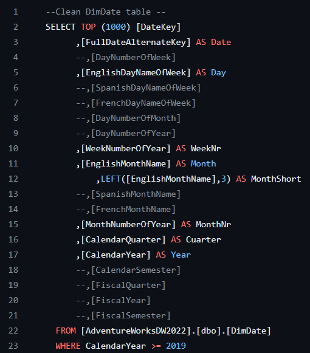

Sales Management
In this project, SQL was utilized to conduct data cleaning and transformation based on the 'AdventureWorksDW2019' database. Extracting essential tables using SQL, a robust data model was created to facilitate analysis and address the business requirements outlined in the user stories. Additionally, an Excel-based sales budget data source was integrated into the data model to enrich the analysis.
Subsequently, in Power BI, a comprehensive sales management dashboard was developed. The dashboard comprises a main overview page, offering a holistic view, while two additional pages focus on detailed tables and visualizations. These visualizations provide insights into sales trends over time, customer analysis, and product performance, ensuring a comprehensive understanding of sales dynamics.
SQL Data Preparation & Transformation
In this project phase, we focused on optimizing and preparing our data using SQL. We worked on the 'AdventureWorksDW2019' database we meticulously cleaned and transformed the data to ensure accuracy and suitability for analysis. Through SQL queries, we standardized formats, resolved inconsistencies, and removed redundant or irrelevant information. This process was crucial in establishing a solid foundation for our analysis, ensuring that the data was structured and ready for insightful exploration in the subsequent project phases
Example of the code used:
Dynamic Data Visualizations in Power BI
In this project phase, we dedicated our efforts to creating interactive and informative Power BI dashboards. These dashboards were meticulously crafted to present complex data in a clear and engaging manner, offering dynamic visualizations and insightful analytics. Through Power BI's functionalities, we organized and displayed key metrics, enabling users to explore data interactively, uncover trends, and make informed decisions. These dashboards serve as a powerful tool, providing actionable insights and facilitating data-driven strategies to drive success in our project goals.
Sales Overview
Customer details